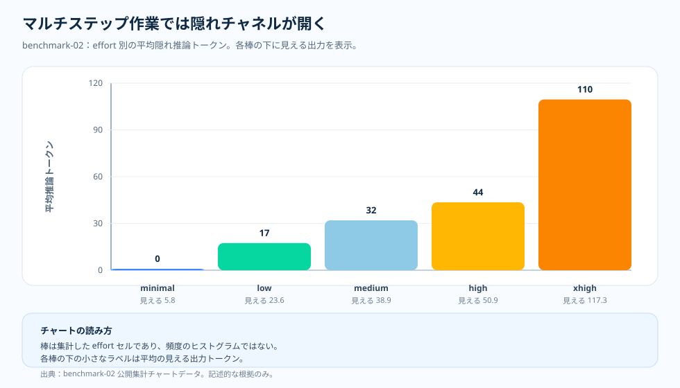

トピック記事 · 隠れた請求の面
見えない推論トークン：回答には現れない、もう一つの請求
短い事実回答のランは、回答だけを眺めるとごく普通に見えた。応答の多くは短い。だが請求額はまったく別の話を語っていた。推論モデルは、目に見えるテキストを出力する前に、モデルの内側でトークンを費やせるからだ。その内部トークンはユーザーには表示されないが、計測される利用量の一部として確かに存在している。
問い
回答テキストが短いままなら、追加のコストはどこから来たのか。
根拠
benchmark-01 のトークン構成・コスト・レイテンシのチャートを、一本の根拠の連なりとして読む。
わかったこと
目に見える回答の長さはほとんど変わらないのに、隠れた推論トークンは effort の段階を上がるほど増えていった。
判断
回答が短いままでも推論トークンはテレメトリで追跡する。隠れたトークンの予算を、応答が見せない請求の一部として扱う。

回答は短く、内部の作業は短くなかった
benchmark-01 で役に立つ意外性は、extra-high effort のコストが高かったこと自体ではない。そこは想定どおりだ。本当に注目すべきは、その増加のうち最終的な回答に現れたぶんがいかに小さかったか、という点である。minimal effort では見える出力が平均 12.7 トークン、推論トークンが平均 3.7 トークン。extra-high effort では見える出力が平均 17.9 トークン、推論トークンが平均 311.5 トークンだった。
つまり、読者が目にするテキストは、購入された計算量の代理指標としては当てにならない。短い回答が大きな推論予算を覆い隠すこともあるし、もっともらしい回答であっても、対になる品質チャートが動かなければ経済的には割の悪い取引になりうる。
チャートの読み方
棒は effort セルごとの集計値であって、個々のリクエストのヒストグラムではない。X 軸は推論 effort の設定、Y 軸はリクエストあたりの平均推論トークン。各棒の下にある小さなラベルは、同じセルの平均見える出力トークン数を示している。
チャートは下から上へ読むとよい。まず、請求額を説明できるほど見える出力が変化したかを問う。次に、隠れた推論の棒と見比べる。このスライスでは、説明要因は回答の長さではない。内部の作業である。
元チャートが付け加えるもの
トークン構成はメカニズムを説明するが、それだけでは足りない。コストチャートは請求額が膨らんでいくことを示す。品質チャートは、その請求でより良い回答が買えたのかを問う。レイテンシチャートはユーザーが体感する待ち時間を示す。三つが揃ってはじめて、隠れた面が読み取れるようになる——この短い事実回答のスライスでは、内部トークンが増え、支出が増え、レイテンシが伸び、それに見合う品質の上積みはなかった。
押さえておきたい要点
教訓は「推論トークンが悪い」ということではない。それらは推論モデルの本質そのものだ。教訓は、推論トークンには仕事が必要だ、という点にある。タスクが短い事実回答しか求めないなら、内部の推論は静かな予算の漏れになりうる。タスクが多段の解決を必要とするなら、同じトークンこそが品質向上を稼ぎ出す当のものになりうる。
だからこそ概要記事は、コスト・品質・レイテンシ・トークン構成を常に並べて扱う。請求額は、回答のなかにすべて見えているわけではない。
根拠の表
| 根拠の行 | 指標 A | 指標 B | 付け加わること |
|---|---|---|---|
| Minimal effort | 見える出力トークン 12.7 | 推論トークン 3.7 | 短い回答、ごく小さな隠れ予算。 |
| Extra-high effort | 見える出力トークン 17.9 | 推論トークン 311.5 | テキストは依然短いのに、内部予算ははるかに大きい。 |
| 対の品質 | minimal で 1.87931 | extra-high で 1.779661 | このスライスでは、隠れた作業は品質の上積みを買わなかった。 |
| レイテンシ | minimal で 1.1s | extra-high で 3.1s | 隠れた作業は待ち時間も引き伸ばした。 |
出典と根拠の境界
上記の数値はすべて本リポジトリの公開アーティファクトにたどれ、コストの主張はいずれも日付付きの価格スナップショットで算定している。推論トークンの予算をテレメトリで見えるようにするというこの記事の会計上の習慣は、記事自身の運用上の推論である。下の二つの Tier は、文書化された入力がどこで終わり、推論がどこから始まるのかを示す。
- Tier 1 — 方法論の契約： 本リポジトリ、
docs/05-methodology.md（v1.0）。セルあたり N = 20 のオーサリング済みサンプル、R = 3 回の反復、公開集計スライスのみ。チャート読解の本文はこの凍結された前提に立っており、誤差バーは信頼区間ではなく標準偏差で、N = 20 で p 値は主張しない。 - Tier 1 — PAYG 価格スナップショット： リクエストあたりのコストは本リポジトリの
pricing/azure-openai-payg-2026-05.yamlで算定している。アクセス日：2026-05-19、出典：https://azure.microsoft.com/en-us/pricing/details/azure-openai/、アーカイブ：https://web.archive.org/web/20260519042011/https://azure.microsoft.com/en-us/pricing/details/azure-openai/。定価が動けば隠れたトークンの請求も変わる。 - Tier 2 — benchmark-01 スライスの測定： 本リポジトリ、
benchmarks/01-short-factual/analysis.json。推論トークンの 3.655172 から 311.474576 への変化、見える出力の 12.672414 から 17.881356 への移動、評価スコアの 1.87931 から 1.779661、レイテンシの 1112.798745 ms から 3088.001225 ms への伸びの出典。 - Tier 2 — レンダリング済みチャートデータ： 本リポジトリ、
docs/blog/data/chart-data/token-composition/benchmark-01/tokens.jsonがトークン分解の出典。docs/blog/data/chart-data/cost-curves-effort/benchmark-01/cost-per-request.json、quality.json、latency.jsonと一緒に読むと、隠れたトークンが品質の上積みを伴わずに請求と待ち時間を膨らませたという根拠になる。 - エビデンスダッシュボード： レンダリングされた benchmark-01 トークン構成チャートは、同じアーティファクトを監査できる形である。
このスライスが何を証明し、何を証明しないか：この短い事実回答のスライスでは、見える出力がほとんど動かないまま、内部の推論が effort の段階を上がるほど増えたことを示す。同じ隠れたトークンの形が多段、ツールエージェント、統合の作業でも現れることは証明しない。各トピックはそれぞれの測定を持つ。
この根拠から言えること
推論トークンの予算は、回答のなかでは見えなくても、テレメトリのなかでは見えているべきだ。これがこのトピックがシリーズに加える、会計上の基本的な習慣である。
実務上のルール
- 推論トークンを合計トークンだけでなく、リクエストごとに見える出力の隣に記録してください。
- 短い回答でも大きな内部コストを抱えうるため、隠れたトークンの予算にアラートを設定してください。
- このワークロードの形で対になる品質チャートが動いたあとにだけ、より高い effort へ引き上げてください。
実務上のルール：見える回答が短いままでも、推論トークンはテレメトリで測定してください。隠れたトークンの予算こそ、応答が見せない請求の一部だ。